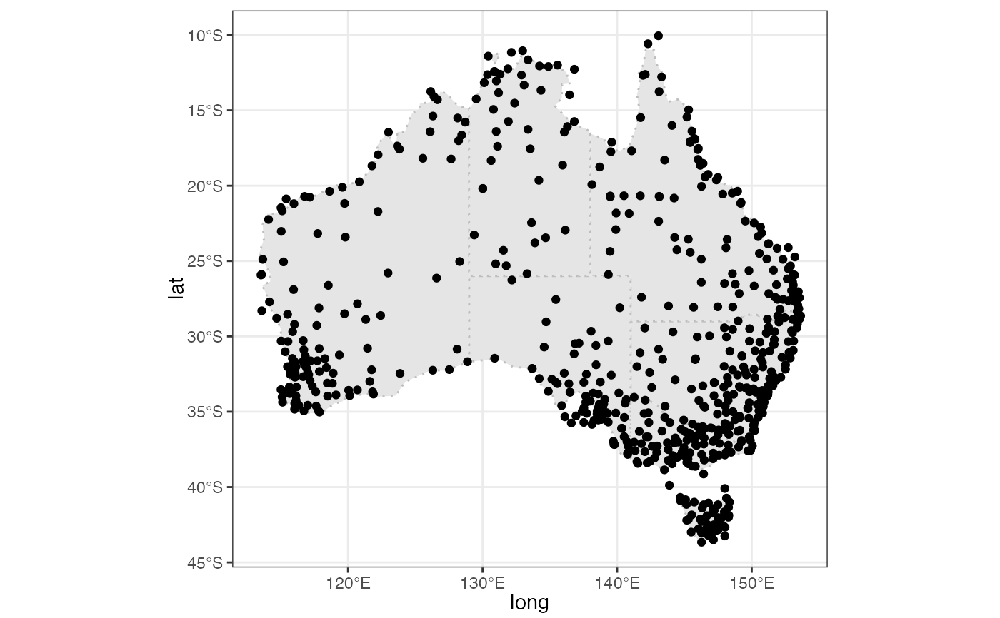

Daily measure on precipitation (prcp) maximum temperature (tmax), and minimum temperature (tmin) in 2020 for 5 stations.
climate_flat
stations
climateA tibble object with 155 rows and 10 columns
station id
latitude of the station
longitude of the station
elevation of the station
station name
the world meteorological organisation (WMO) station number
the date that prcp, tmax, and tmin recorded
precipitation
maximum temperature
minimum temperature
An object of class tbl_df (inherits from tbl, data.frame) with 5 rows and 6 columns.
An object of class tbl_df (inherits from tbl, data.frame) with 1830 rows and 5 columns.
climate_aus climate_subset
library(ggplot2)
state_map <- rmapshaper::ms_simplify(ozmaps::abs_ste, keep = 2e-3)
#> Registered S3 method overwritten by 'geojsonlint':
#> method from
#> print.location dplyr
ggplot2::ggplot() +
ggplot2::geom_sf(data = state_map,
ggplot2::aes(geometry = .data$geometry),
color = "grey", linetype = "dotted") +
ggplot2::geom_point(data = climate_aus,
ggplot2::aes(x = long, y = lat)) +
ggplot2::theme_bw()
